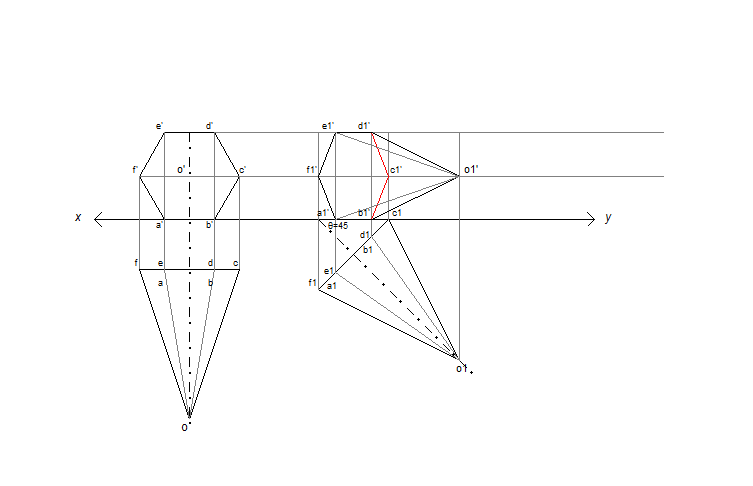
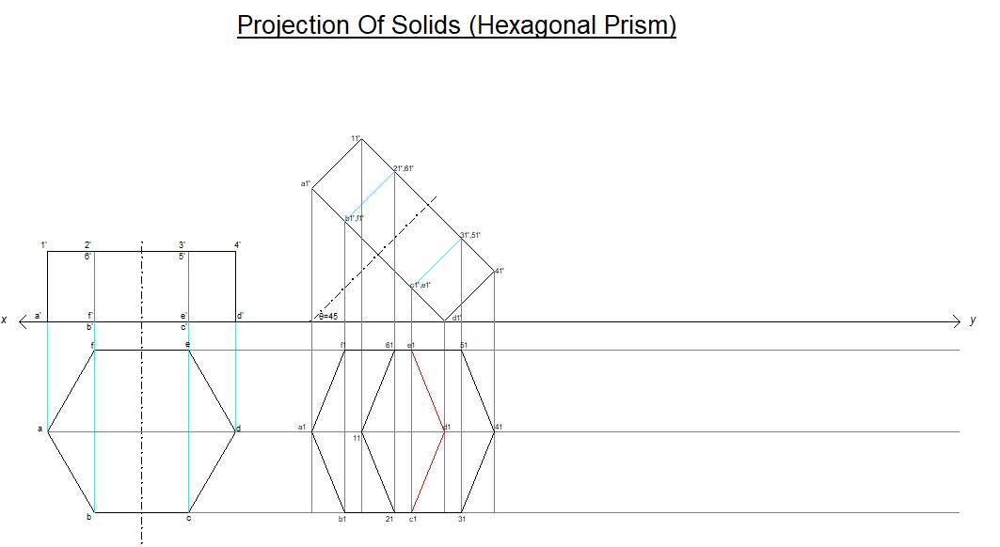
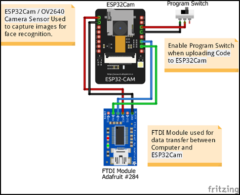
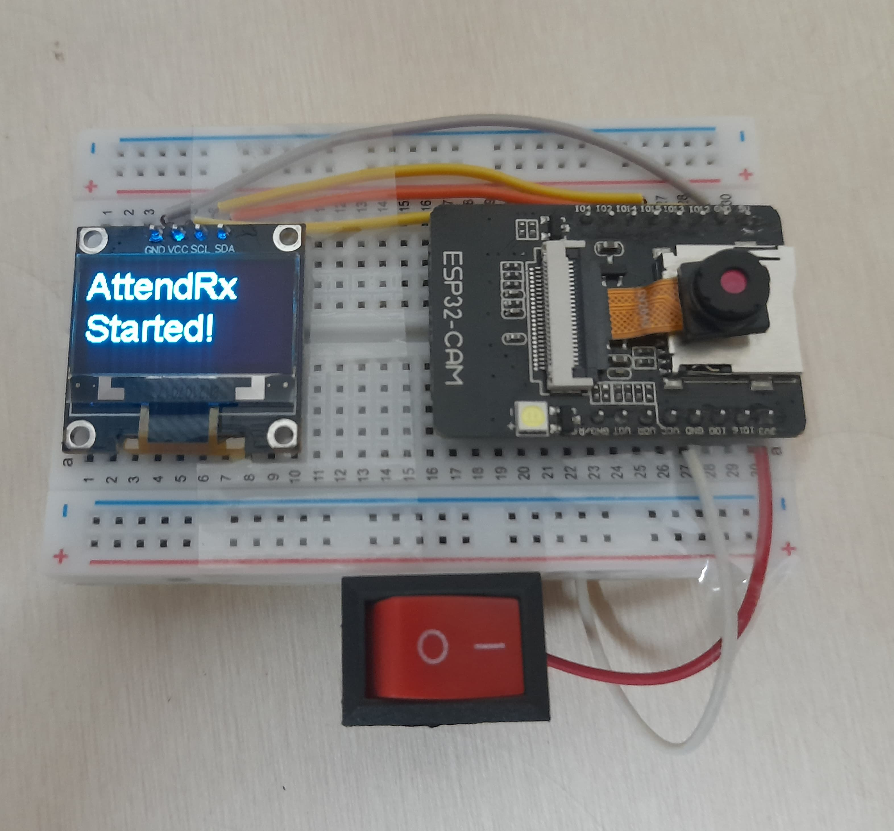

{kind=link}
{kind=link}


Crafted the Solids Projection Simulator, an innovative Python-based project
focused on automating the projection of solids using the Python Turtle library.
This simulation tool accurately projects hexagonal pyramids and prisms onto a
2D plane, employing mathematical calculations for precise visualizations and
providing a user-friendly interface for experimentation and learning.

Developed a Home Automation System integrating microcontrollers and cloud
services for enhanced security and convenience. Enables remote control via
Google Assistant or Alexa, optimizing energy usage and offering features like
fire detection and intruder alerts.


Developed a collaborative pothole filling robot powered by Arduino
streamlining repairs and enhancing efficiency without displacing human labor.
Designed to navigate diverse terrains, the robot employs servo motors for
gravel mix dispensing and precise dispensing mechanism rotation,
revolutionizing pothole repair procedures
Key contributor in devising the Pill Dispensing Mechanism and Pan-Tilt Mechanism for an advanced medical robot utilizing ESP8266 technology. Integrated these mechanisms to enable seamless interaction with a dedicated website, enhancing the robot's functionality and accessibility for medical applications.


Designed and implemented a comprehensive face recognition-based attendance
system specifically for educational environments. Orchestrated the integration
of ESP32-CAM modules and developed intricate code facilitating seamless
communication between the module and the attendance system, leveraging the
Haar Cascade algorithm for accurate face recognition.